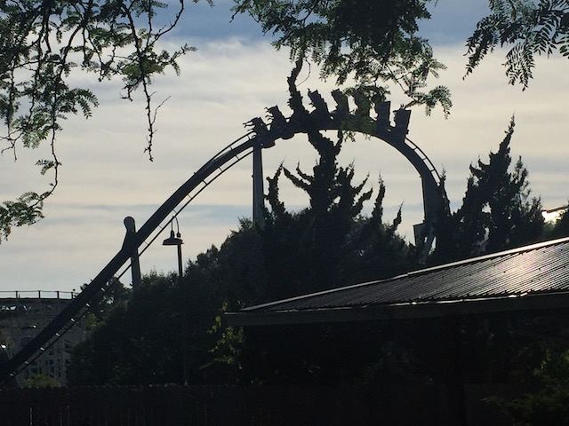
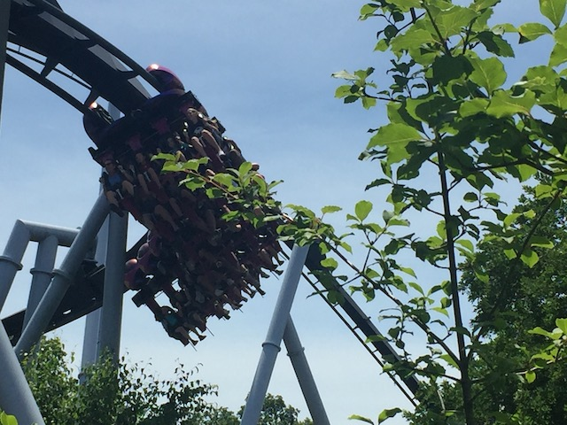
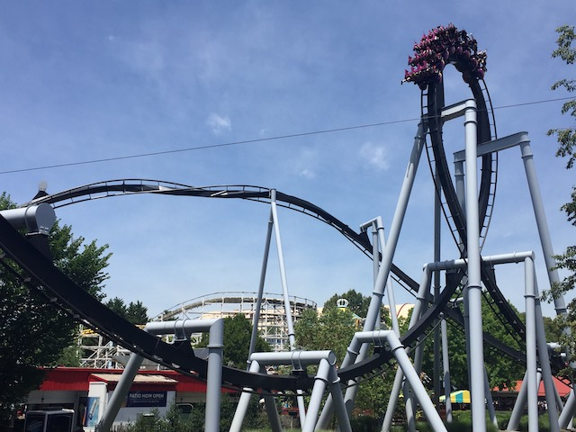
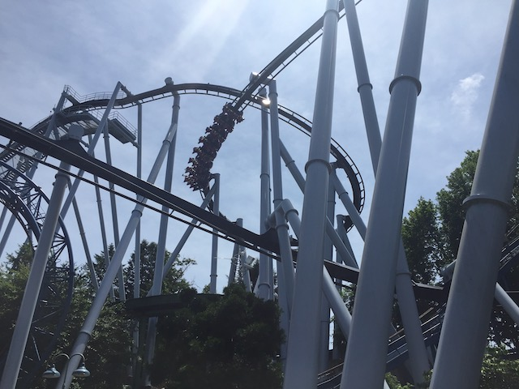
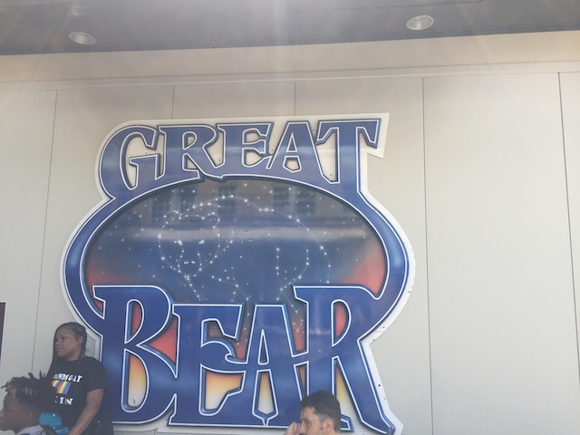

| |
Great Bear Review

We're here at Hersheypark. After getting in the typical B&M seats, you turn out of the station and then climb the lifthill. As you climb the lifthill, you get a great view of the whole surrounding area as well as Skyrush, Comet, and SuperDooperLooper. Once you crest the lifthill, you head into a helix. At this point, you begin to think "What the hell is going on right here?" Helixes after lifthills are not something that's supossed to happen. But keep in mind that Great Bear is also known as Random the Ride for a reason. Anyways, this is an interesting element. You're kind of coasting and turning, which is kind of fun. And then you just head straight into the first drop. Now Great Bear is going quite fast because we not only got our speed from the first drop, but we also had a little extra speed from that first helix. We then soar up into a verical loop. While it's not the greatest verical loop in the world, it's still pretty fun. Especially when compared to the second half of the ride. We then fly through a little straight track before soaring up into the Immelmann Loop. The Immelmann is a really fun part of the ride. And before you know it, you're heading straight for the best part of the ride. The Zero G Roll. While this Zero G Roll is no Kumba or anything, but at least it has a whip unlike Silver Bullet. However, once we're done with the Zero G Roll, we come to the second half of the ride, which is exactly why we call this ride Random the Ride. We first slightly rise up a little, though it feels like straight track. We then go through a turn close to the ground. Ok, so it's not too bad. But the randomness keeps on going from there. We then go into an S Bend over water which is basically, yep. You guessed it. More Straight Track. But at least you're right above Hershey's River to give you a cool location. Then we go through the corkscrew. The final fun part of Great Bear. The Corkscrew is actually pretty powerful and not shabby. Not shabby at all. From here, the ride is basically over. All that's left is, yep. You guessed it. More Randomness. It's just a few turns. Nothing special. It's almost like something that would be produced when turning on Auto Complete when building a coaster in RCT3. While Great Bear is a very random coaster, it is also very fun and definetly a good addition to Hersheypark. And if want to reduce your wait time for Great Bear, just don't get the front. I saved myself 20 minutes just by not riding it in the front. I would definetly recommend riding this if you're at Hersheypark.
7/10
Location: Hersheypark
Opened: 1998
Built by: B&M
Last Ridden: June 25, 2021
Great Bear Photos











Home
|